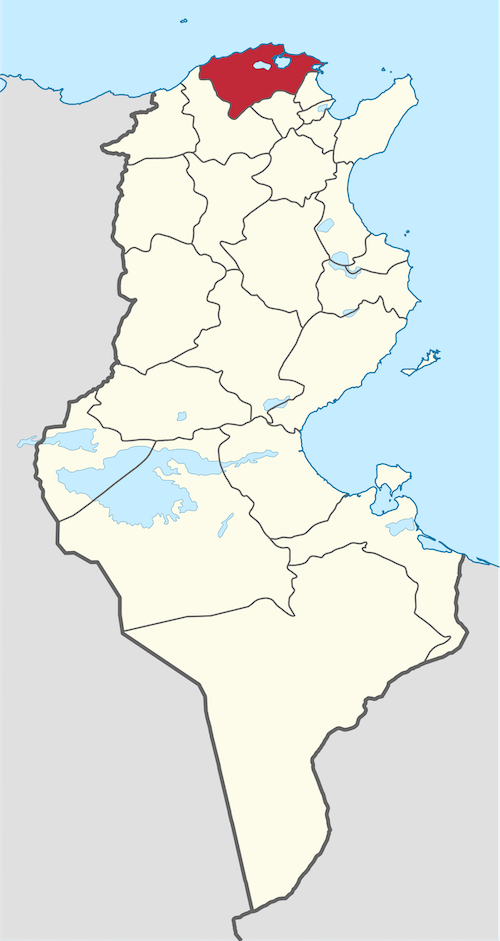
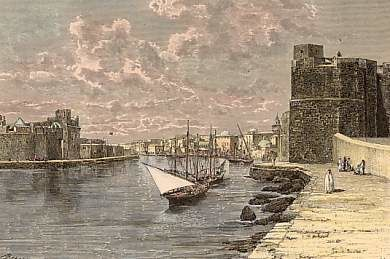
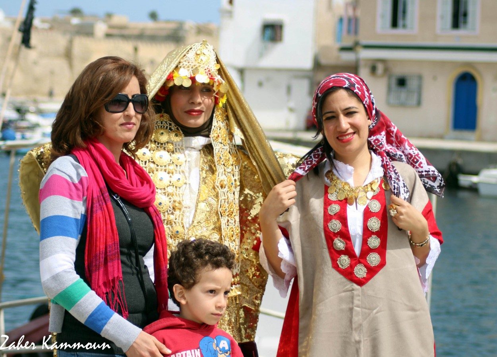
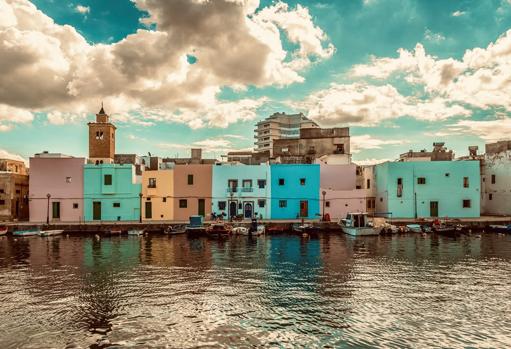
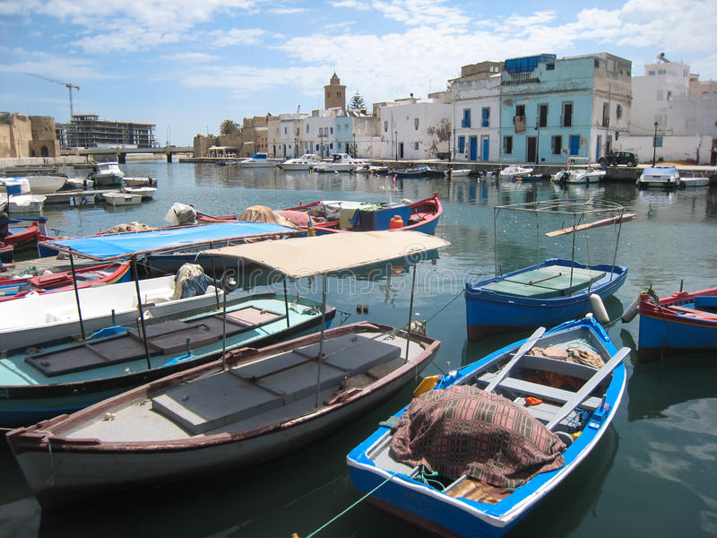
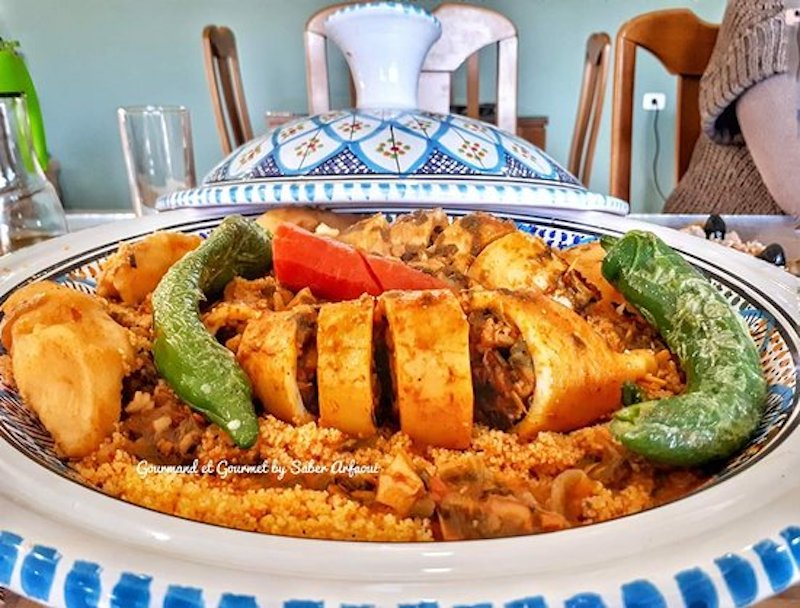

Bizerte
Située entre la méditerranée et le lac Bizerte, à la pointe nord de la Tunisie, la ville de Bizerte est une destination touristique incontournable dans ce pays. Grâce à ses plages, ses forêts et son lac, cette ville côtière offre notamment aux touristes un large choix d'activités à faire et de choses à voir.
Dar El Kasbah
Mausolée de Sidi Ali El Mekki
Le Parc Naturel Ichkeul
Le vieux port de Bizerte
Quelques chiffres
Superficie
457.97 Km2
Nombre de maisons
48 000 en 2014
Habitants
167759
Localisation
Elle se trouve à une soixantaine de kilomètres au nord-ouest de Tunis, la capitale du pays, et à cinq kilomètres du cap Blanc, la pointe septentrionale de l'Afrique. La ville se situe à la pointe sud-est d'un isthme sur la rive nord du canal de Bizerte reliant la mer au lac de Bizerte. Elle est reliée au reste de son aire urbaine située sur la rive sud du canal, formé par la localité de Zarzouna et les villes de Menzel Jemil et Menzel Abderrahmane, par un pont mobile qui débouche directement sur la RN8 menant à Tunis.

Histoire
Initialement petit comptoir phénicien, dont l’origine remonte au premier millénaire avant J.C., Bizerte a porté, d’après les auteurs grecs et latins de l’Antiquité, plusieurs noms dont les plus connus sont Hippo, Hippo Acra, Hippo Diaritus et Hippo Zaritus. Son nom arabe : Banzart, dérive d’une déformation phonétique de son nom antique. Après la défaite d’Aghatocle pendant les guerres puniques, Hippo rentre définitivement dans l’orbite de Carthage et participe à ses côtés à toutes les épreuves qui marquent le pays. Ensuite, la conquête romaine efface d’un trait neuf siècles d’histoire punique. Démantelée, Hippo voit son territoire passer à Utique qui a pris le parti de Rome. Et il faudra longtemps pour qu’une nouvelle ville romaine s’érige à la place du site punique d’Hippo. A partir de 1050, le déferlement des tribus hilaliennes provoque l’effondrement de l’Etat ziride et le pays éclate en une multitude de petites principautés indépendantes. Bizerte n’échappe pas à la tentation séparatiste. La restauration de l’autorité Almohade annonce une nouvelle rupture : quelques vingt ans plus tard, l’Ifrikya accède au statut d’une province autonome et voit émerger la dynastie Hafside. De 1535 à 1573, Bizerte se transforme en une enclave espagnole tenue par une garnison de quelques centaines d’hommes. Mais les Turcs ne tardent pas à réapparaître dans l’histoire du pays. La défaite infligée par Sinan Pacha aux forces espagnoles en 1574 marque la fin du duel hispano-turc en Tunisie et la disparition de la dynastie hafside.

Culture

hover me
hover me
hover me
hover me